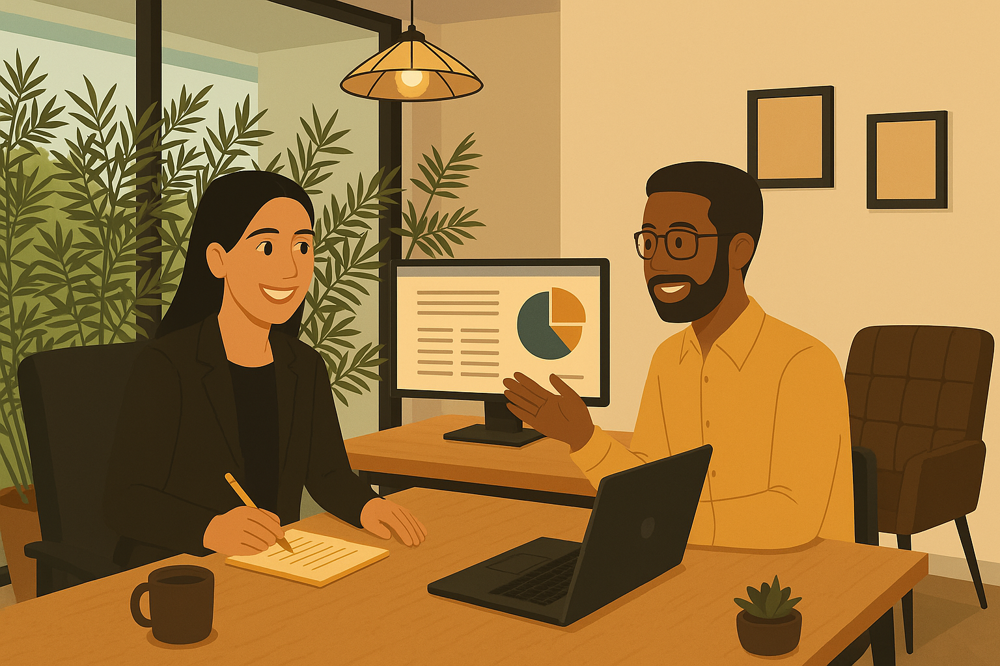
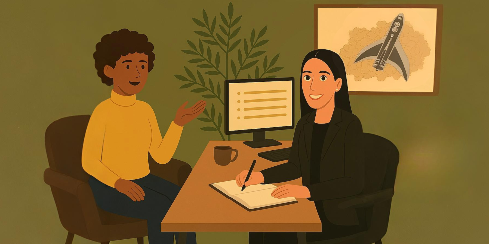
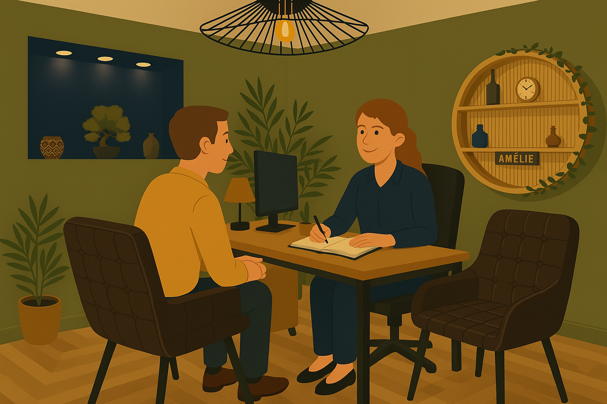
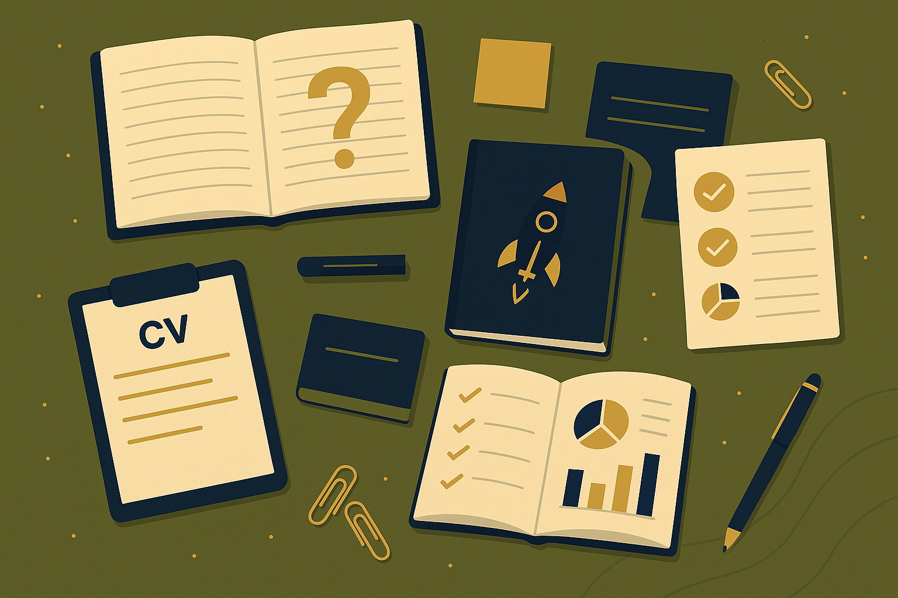
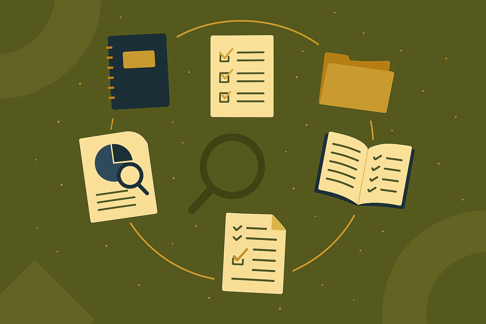
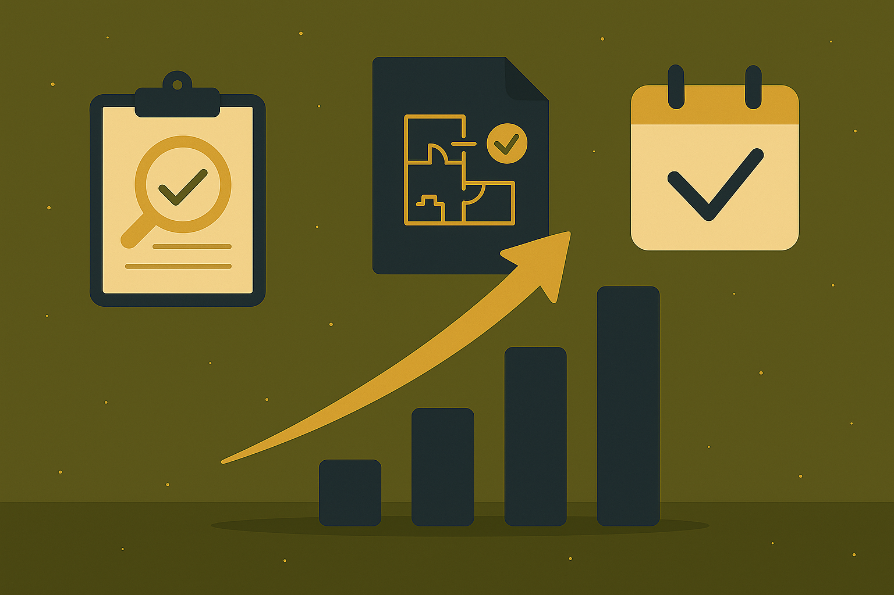
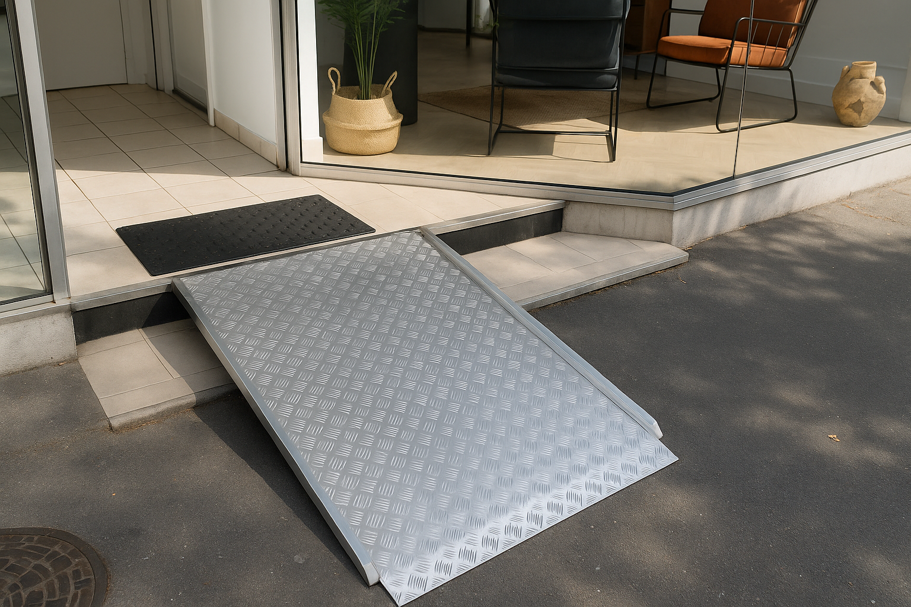
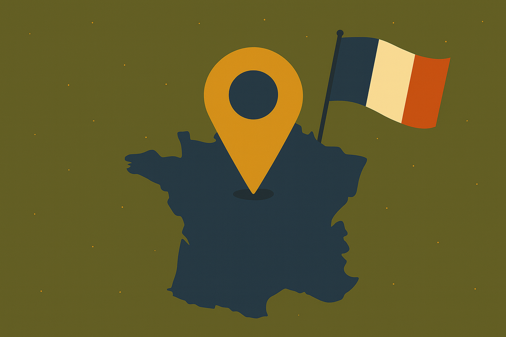

« Il paraît que nous travaillons plus de 70 000 heures durant notre vie… Alors se poser 24 heures max pour réfléchir sur son avenir professionnel avec une méthode complète et adaptée… c’est important et tellement évident. »
- Le bilan de compétences, c'est 10 à 20h d’entretiens personnalisés → max 24h d’accompagnement.
- Formule la plus choisie : 24h dont 16h en entretiens personnalisés → 1 950€ la « formule classique ».
100 %
Satisfaction*(1)
100 %
Recommandation*(2)
100 %
Avancement à 6 mois*(3)
Objectifs & Public visé

Objectifs du bilan
Un accompagnement complet pour clarifier votre avenir professionnel :
- Analyser vos compétences professionnelles et personnelles, aptitudes et motivations.
- Mieux vous connaître, identifier talents et valeurs.
- Explorer de nouveaux métiers.
- Analyser le marché de l'emploi.
- Définir un projet professionnel et un plan d’action.
- Renforcer la connaissance et la confiance en soi.
- Préparer les prochaines étapes professionnelles ou personnelles.
- À mes yeux : "le bilan de compétences devrait être réalisé tous les 10 ans".
Public visé
Ouvert et adapté à toute personne souhaitant :
- Changer de métier ou d’employeur.
- Réaliser une formation ou une VAE
- Se lancer dans l'entrepreneuriat
- Sortir d’une période difficile.
- Retrouver motivation et envie.
- Prendre du recul sur son parcours.
- Trouver un emploi aligné avec ses valeurs et sa personnalité.
- Identifier ses compétences distinctives.
- Se retrouver après un burn out.
Rôle & Financement
Rôle & Approche
L’objectif est d’accompagner chaque bénéficiaire pour atteindre ses objectifs professionnels et personnels.
- Tests psychométriques personnalisés : CENTRAL TEST (référence internationale de qualité).
- Écoute bienveillante, empathique et sans jugement.
- Découverte des aspirations, talents et compétences.
- Reprise de confiance.
- Préparation aux futures étapes dans le but de vous remettre en action.
- Les contenus, supports et modalités (présentiel/visio, rythme des séances, outils utilisés) peuvent être adaptés au profil, aux objectifs et aux contraintes du bénéficiaire, sur la base du diagnostic initial.
Valeurs & déontologie
- Humain, empathie, authenticité, confidentialité.
- Neutralité, transparence, professionnalisme, formation continue.
- Respect strict des 3 phases légales du bilan (Article R6313-4).
- Confidentialité (articles 226-13 et 226-14 du Code pénal).

Financement
- CPF : via moncompteformation.gouv.fr (si solde suffisant).
- Autofinancement : paiement jusqu’à 5 fois sans frais.
- Employeur : possible selon accord.
- Modalités définies lors du 1er entretien offert.
Les 4 formules
Formule Speed
1 300 €
- 18h max dont 10h en RDV personnalisé (hors temps de suivi).
- Remise d’une synthèse.
- Finançable CPF (selon votre solde) ou autofinancement (5x sans frais)...
Formule Classique
1 950 €
- 24h max dont 16h en RDV personnalisé (hors temps de suivi).
- Remise d’une synthèse.
- Finançable CPF (selon votre solde) ou autofinancement (5x sans frais)...
- Formule la plus choisie par les clients
Formule Intense
2 300 €
- 24h max dont 20h en RDV personnalisé (hors temps de suivi).
- Remise d’une synthèse.
- Finançable CPF (selon votre solde) ou autofinancement (5x sans frais)...
Formule Entreprise
Entre 1 950€ et 2 600€
- 24h max dont 16/18h en RDV personnalisé.
- Déplacement possible dans les Hauts-de-France et à Paris.
- Finançable par votre employeur via une convention tripartite (tarification sur devis).
- Offre éligible ANFH
Exemple de déroulement
Formule classique → la plus choisie
→ 24 heures maximum dont votre temps de préparation des séances.
- 30 min à 1 h — RDV découverte offert : analyse des besoins, prise de contact, présentation de l’offre.
- 2h — Analyse du parcours et des objectifs : prendre du recul sur le passé et faire le point sur le présent pour construire le futur.
- 2h — Analyse des valeurs professionnelles : identifier vos déclencheurs émotionnels et ce qui compte dans votre environnement de travail.
- 2h — Découverte et analyse des compétences : mettre en lumière vos savoir-faire et savoir-être. Possibilités d'obtenir l'avis de vos collègues sur vous (test 360).
- 2h — Personnalité, préférences, motivations : explorer votre profil professionnel et vos leviers de motivation.
- 2h — Exploration des besoins : clarifier vos attentes et priorités.
- 2h — Définition du projet professionnel : construire un projet aligné avec vos compétences et aspirations.
- 2h — Exploration métiers et marché : analyser les opportunités, le marché de l'emploi, réaliser des enquêtes métiers et identifier les options viables.
- 2h — Plan d’action et synthèse : planifier les étapes concrètes à venir et remettre un document de synthèse.
- 5 min à 1 h — RDV suivi téléphonique à 6 mois proposé pour évaluer votre avancement et ajuster si nécessaire.
→ 16 heures d'entretien personnalisé hors temps de suivi.
L’accompagnement est sur mesure : les durées et contenus peuvent être adaptés selon les objectifs définis ensemble.
♥ Suivi entre les séances par messages vocaux ou textuels.
Tests CENTRAL TEST de qualité professionnelle ♥, supports numériques fournis, remise en fin de parcours de la synthèse et d’un certificat de réalisation.
Programme et Infos CPF (Site gouvernement)
Programme détaillé de la prestation (PDF)
Kit, Suivi & Méthodes

Kit fourni
- Lecture préparatoire (préparation mentale).
- Livret numérique séances 1 → 5 (tests, autoévaluations).
- Lecture d’aide à la décision (6 choix possibles).
- Livret numérique séances 6 → 8 (informations pour changements, infos emploi, astuces...).
- CV vierge, tests 360.
- Tests complémentaires sur mesure (envoyés entre les séances ou montrés en séance).
- Tous les supports de synthèse sont personnalisés en fonction du profil et des objectifs de chaque client.
Suivi
- Conseils et guidage pendant tout le parcours.
- Contact possible par téléphone ou messages vocaux (SMS/Tchap).
- Un rendez-vous de suivi sera proposé environ 6 mois après la fin du bilan.
- Prise en compte de votre météo intérieure et de vos besoins en début de séance.
- Possibilité d’adapter la fréquence des échanges en fonction des besoins. Le suivi respecte la confidentialité (voir mentions légales) des échanges et des données.

Méthodes pédagogiques
- Entretiens personnalisés.
- 2 livrets numériques à compléter.
- Tests et questionnaires (personnalité, compétences, besoins…) : les méthodes proposées sont sélectionnées en fonction des objectifs et intégrées dans un parcours articulé selon les trois phases légales.
- Enquêtes métiers.
- Accès à des ressources métiers avec des sites spécialisés.
- Synthèse écrite remise au bénéficiaire.
- Apport de contenus supplémentaires en séance personnalisée (sur la base d'un fichier de plus de 150 pages pour adapter l'offre aux besoins spécifiques de chacun et durant l'intégralité du parcours).
Informations Légales & Pratiques

Phases légales (Article R6313-4)
- Phase préliminaire : analyse des besoins, définition du format et modalités.
- Phase d’investigation : construction et validation du projet, élaboration d’alternatives.
- Phase de conclusion : appropriation des résultats, recensement des moyens et conditions, planification des étapes, entretien de suivi possible.
Modalités et délais d’accès
- Les délais d'accès à la prestation sont en moyenne de 1 à 2 jours ouvrés après la demande initiale. Un rappel est garanti sous 10 jours maximum.
- Entretien préalable obligatoire avant toute inscription.
- Entretien offert avant inscription d'une durée de 30 minutes à 1 heure : faire connaissance, déterminer si le bilan vous sera utile, évoquer les formules et l'aspect financement.
- Droit de rétractation : 10 jours pour les autres financements, 14 jours pour le CPF.
Modalités d’évaluation
- Remise d’une synthèse.
- Certificat de fin de formation.
- Formation non diplômante.
- Mini QCM final dans le but que vous preniez conscience de votre avancement.
- Des évaluations intermédiaires sont réalisées à la fin des phases clefs afin de mesurer l’avancement par rapport aux objectifs définis lors de la phase préliminaire. Ces évaluations sont faites sur mesure et à l'aide de l'IA en partie (dans le respect de la RGPD - voir Mentions légales en bas de page).

Accessibilité handicap
- Bureau aux normes ERP avec rampe amovible PMR.
- Mise en relation possible avec organismes spécialisés.
- Référente handicap : Amélie Riche — 06 99 75 66 61 — coach@amelieriche.fr
- Fiche de détection de vos besoins accessible dès le 1er entretien, retour sous 24 heures.
- Les supports peuvent être adaptés et les séances ajustées en fonction des besoins. La référente handicap met en œuvre un plan d’adaptation personnalisé si nécessaire ou vous met en relation avec d'autres organismes.

Données pratiques
- 119 avenue Lobbedez, 62000 Arras.
- Parking gratuit en face.
- Visio possible partout en France.
- Langue : français uniquement.
- Horaires : lundi → samedi (cliquer pour plus de détails)
*(1) Satisfaction au 12/08/2025 : évaluation 4/5-5/5 par 100% des clients dont 94.0% de 5/5
*(2) Recommandation au 12/08/2025 : 96.9% de OUI, 3.1% de PAS DE MANIÈRE SYSTÉMATIQUE
*(3) Avancement au 12/08/2025 : questionnaire post-bilan (6 mois), 0.00% des clients ont répondu NON à la question : Le bilan de compétences vous a-t-il été utile ?
Les indicateurs sont collectés via un questionnaire en ligne à la fin du bilan et à 6 mois. En cas de baisse significative, un plan d’amélioration est déclenché.
Indicateur de résultats du bilan de compétences visualisables en cliquant ici.
*(2) Recommandation au 12/08/2025 : 96.9% de OUI, 3.1% de PAS DE MANIÈRE SYSTÉMATIQUE
*(3) Avancement au 12/08/2025 : questionnaire post-bilan (6 mois), 0.00% des clients ont répondu NON à la question : Le bilan de compétences vous a-t-il été utile ?
Les indicateurs sont collectés via un questionnaire en ligne à la fin du bilan et à 6 mois. En cas de baisse significative, un plan d’amélioration est déclenché.
Indicateur de résultats du bilan de compétences visualisables en cliquant ici.